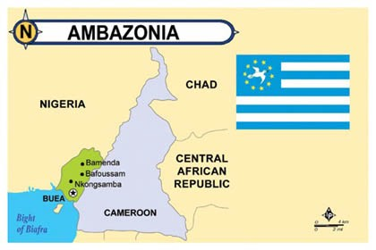

Anglophone Crisis
Background
The Anglophone Crisis also known as the Ambazonia War,or the Cameroonian Civil War,is a conflict in the Southern Cameroons region of Cameroon, part of the long-standing Anglophone problem.[12] In September 2017, separatists in the Anglophone territories of Northwest Region and Southwest Region (collectively known as Southern Cameroons) declared the independence of Ambazonia and began fighting against the Government of Cameroon. Starting as a low-scale insurgency, the conflict spread to most parts of the Anglophone regions within a year.[14] By the summer of 2019, the government controlled the major cities and parts of the countryside, while the separatists held parts of the countryside and regularly appeared in the major cities. The war has killed approximately 3,000 people[8] and forced more than half a million people to flee their homes.[5] Although 2019 has seen the first known instance of dialogue between Cameroon and the separatists,[15] as well as a state-organized national dialogue and the granting of a special status to the Anglophone regions,[16] the war continued to intensify in late 2019.[17] The 2020 Cameroonian parliamentary election brought further escalation, as the separatists became more assertive while Cameroon deployed additional forces. While the 2019–20 coronavirus pandemic saw one armed group declare a unilateral ceasefire to combat the spread of COVID-19, other groups and the Cameroonian government ignored calls to follow suit and kept on fighting.

Strategy
Milatary strategy
The Cameroonian Army is fighting a counter-insurgency war, aiming to hit the separatists' support base. This includes burning houses where weapons are found and, according to locals but denied by the army, carrying out revenge attacks.[226] In August 2018, the Defence Minister of Cameroon announced that the army would be expanded with 2,600 new recruits, 2,000 of whom would go to the BIR.[227] In addition to expanding the army, the government has supported local vigilante groups, which there were more than 30 of as of October 2019.[3] The government has also set up rehab centers in Bamenda and Buea to reintegrate separatists who have The Ambazonian separatists are fighting a guerrilla war. Numerically and materially disadvantaged, the separatists carry out hit-and-run attacks, ambushes and raids. According to the ADF, as of June 2018 there were 1,500 soldiers in the ADF, spread across 20 camps throughout Southern Cameroons.[229] In May 2019, independent sources measured the total number of separatist fighters to be between 2,000 and 4,000, a figure that included numerous ex-soldiers and ex-policemen, a significant number of female combatants, and dozens of Nigerian mercenaries. The Nigerians among the rebels mostly consisted of criminals and ex-insurgents who had previously taken part in the conflict in the Niger Delta.
Political And Diplomatic Strategy
According to Millan Atam, chairperson of the Southern Cameroonians Congress of the People, the separatists are building up support for their cause through two distinct phases. The first phase was to build internal capability to resist the Cameroonian Army and raise faith in the cause. Once a significant portion of the population of Southern Cameroons clearly wanted separation, the separatists would approach the international community with their cause. The Cameroonian government has tried to limit the extent of which the conflict affects everyday life in Southern Cameroons, and portrays the war as a battle between chaos and stability in which the government represents the latter. To this end, local authorities have penalized businesses that respected "ghost towns" declared by the separatists.[235] The government has fired and replaced local administrators who fled from the region, despite their fears of kidnappings.[236] In September 2018, the army physically prevented people from fleeing their homes. In August 2018, Minister of Territorial Administration Atanga Nji offered amnesty to separatists who surrender their weapons, saying they would "be received as prodigal sons". The minister also announced a plan to rebuild infrastructure that had been destroyed due to the conflict.
War crimes
Defeat and Frustruation of the cameroun Army
There is photographic evidence that shows a consistent strategy of burning down villages. The army has claimed that the soldiers who were filmed were separatists wearing stolen Cameroonian Army uniforms, a claim that has been denied by local residents. Satellite images show extensive damage to villages. Journalists have been denied entry to the conflict zones, and soldiers have been forbidden from carrying mobile phones.[240] In August 2018, the Centre for Human Rights and Democracy in Africa published a list of 106 villages that had been raided by government forces since October 2017. Citing eyewitness accounts, videos and photos as evidence, the Centre claimed that 71 of these villages had been completely destroyed and depopulated, while the remaining had been partially deserted.